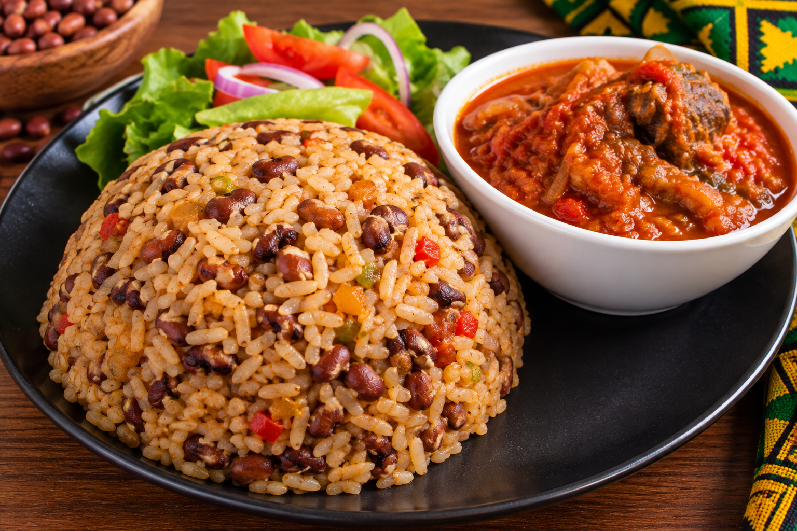

Ayimolou 🇹🇬
L'Ayimolou est un plat traditionnel très apprécié au Togo. Il est préparé avec du riz mélangé aux haricots et peut être accompagné d'une sauce, de piment, de viande ou de poisson.

🛒 Ingrédients
- Riz
- Haricots
- Oignon
- Huile
- Sel
- Eau
- Piment selon le goût
👩🏽🍳 Préparation
- Trier et laver soigneusement les haricots.
- Faire cuire les haricots dans une casserole jusqu'à ce qu'ils commencent à devenir tendres.
- Laver le riz puis l'ajouter aux haricots.
- Ajouter l'eau nécessaire, le sel et l'oignon.
- Laisser cuire doucement jusqu'à ce que le riz et les haricots soient complètement cuits.
- Mélanger délicatement afin d'obtenir un plat homogène de riz et de haricots.
🍲 Accompagnement
L'Ayimolou peut être accompagné d'une sauce tomate, de piment, de viande, de poisson ou d'autres accompagnements selon les habitudes de chacun.
💡 Petit conseil
Pour obtenir un bon Ayimolou, il faut veiller à ce que les haricots soient suffisamment cuits avant que le riz ne termine sa cuisson.